目录
第一部分 准备
下载
＜NEUTRINO 本体＞
从 NEUTRINO 官方网站下载最新版：https://studio-neutrino.com
- NEUTRINO 和它的大部分声库都通过 Google Drive 配布，引擎大小接近 2G。请自备梯子。
＜NEUTRINO 琴葉 茜・葵＞
从 A.I.VOICE 支持网站下载最新版：https://aivoice.jp/member/
※必须预先注册 A.I.VOICE 琴葉 茜・葵
- 没有买的话，用 AI 切蒲英、Merrow 等 NEUTRINO 的其他声库也能跟完这个教程，但不同声库的效果可能会有所不同。
下载方式：
-
进入 A.I.VOICE 的支持网站，在右侧登录账号（如果没有账号，请点下面的「新規登録」注册一个账号）；
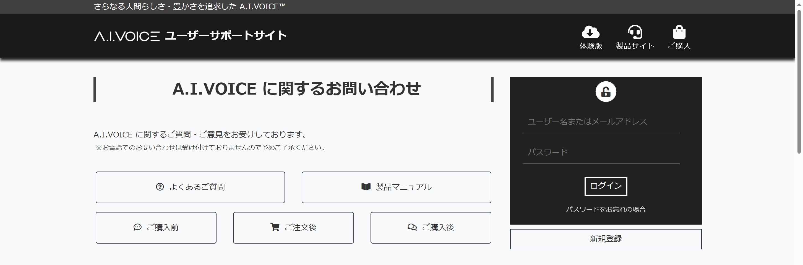 -
点击「製品情報」，检查账号中是否有「A.I.VOICE 琴葉 茜・葵」；
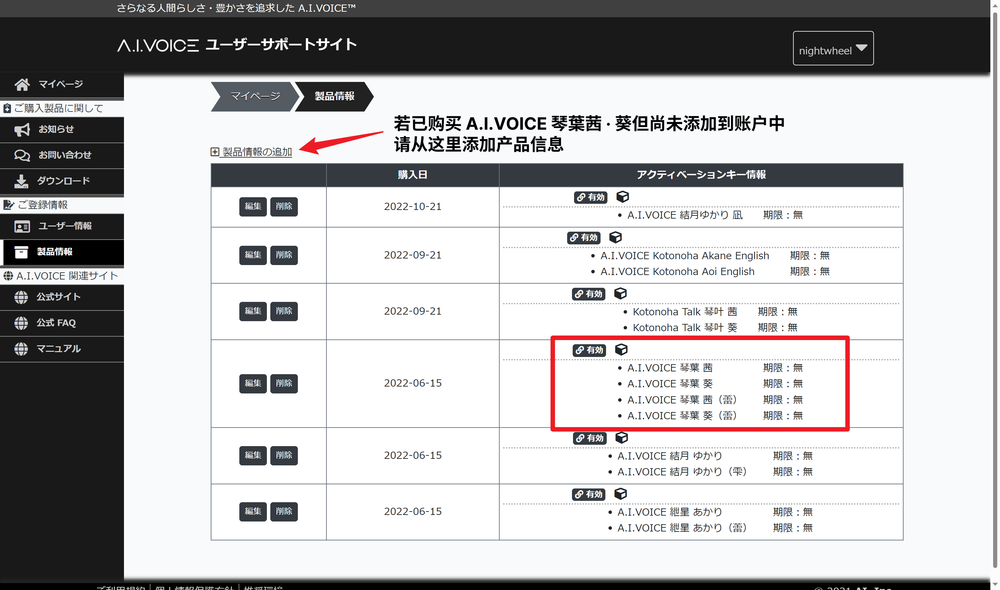 -
点击「ダウンロード」，跳转到下载页面；
-
点击特典切换到特典页，然后找到最新的「琴葉 茜（NEUTRINO-Library）」与「琴葉 葵（NEUTRINO-Library）」，点击链接下载。
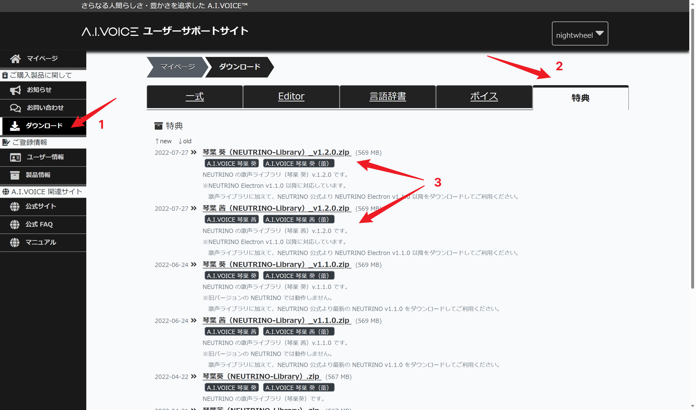
＜NEUTRINO 調声支援ツール（NEUTRINO 调声支援工具）＞
从 GitHub 下载最新版：https://github.com/sigprogramming/tyouseisientool/releases
- 直播时最新的版本为 1.7.4.6。只需下载当前最新的版本即可，不需要用跟视频里一样的版本。
- 注意：不要下载版本号后跟
-beta的 beta 版。beta 版有出 bug 的可能。
下载方式：
- 进入 NEUTRINO 調声支援ツール的 Releases 页，往下滚动找到当前最新的版本；
- 点击 Assets 旁边的箭头展开发布文件列表，点击 .zip 文件下载。
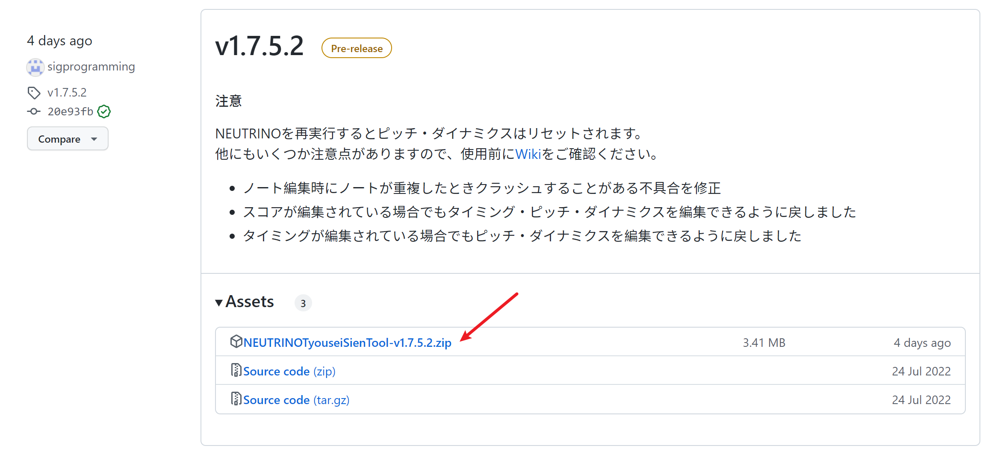
＜乐曲数据＞
じゃむ。（作詞・作曲：みきとP）
从 A.I.VOICE 的网站下载：https://aivoice.jp/tech/Jam-SongData.zip
配置
放置文件
解压下载好的所有文件。NEUTRINO 本体、NEUTRINO 调声支援工具和乐曲数据的位置随意。为了方便操作，建议放在同一个文件夹下。
将 琴葉 茜（NEUTRINO-Library） 文件夹内的 AKANE 移动到 \NEUTRINO\model 文件下。对 琴葉 葵（NEUTRINO-Library） 文件夹内的 AOI 做同样的操作。
全部完成后，文件夹结构应该类似下列的 program structure：
1 | . |
配置 NEUTRINO 调声支援工具
双击 NEUTRINOTyouseiSienTool.exe 运行。在如图所示的位置点击，打开设置页面。
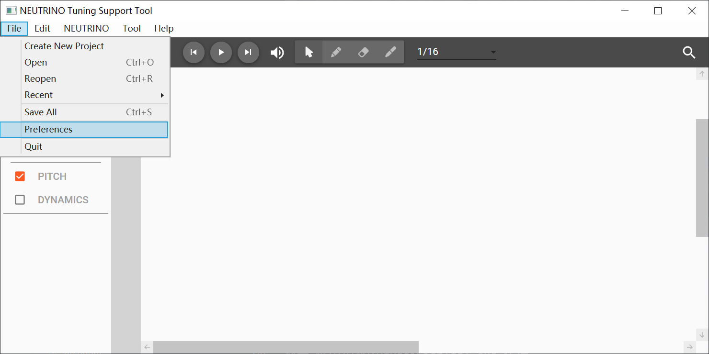
点击右侧文件夹图标，指定 NEUTRINO 引擎所在的位置（即上述 program structure 显示的 NEUTRINO 文件夹所在路径）。
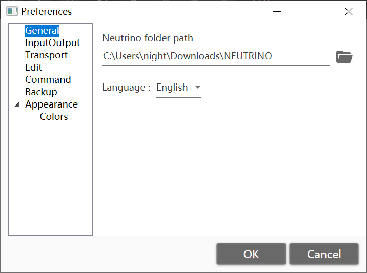
调声工具支持英语或日语。如有需要可切换为另一种语言。
另外还可以在其他选项中修改其他设置。例如可以在 Transport 页中修改光标的移动方式，令其播放完后返回播放的起始处。
点击 OK 完成设置。
检查配置
将 Jam-SongData 下的 TrackA 或 TrackB 拖入调声工具中。现在应该能在乐曲的开头看见调号、拍号以及曲速，在第 14 小节附近看见已填好词的音符。但点击屏幕上的播放按钮或按空格播放时，是没有声音的，TIMING 等参数也处于不可编辑的状态。
点击 NEUTRINO 选项卡，选择 NEUTRINO Control Panel 选项，调出 NEUTRINO 控制面板。
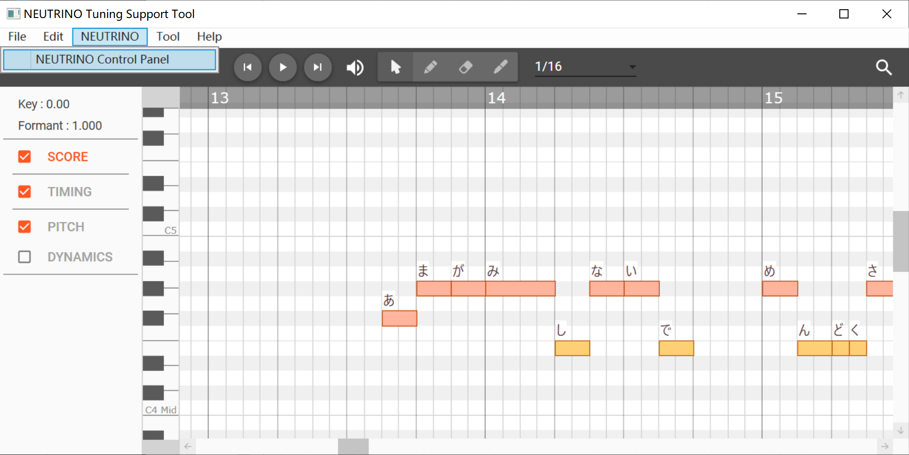
Parameter Estimation（参数估算）下唯一的选项 NEUTRINO 将会使用选择的模型（歌手），根据乐谱估算音高、声质、颤音，并生成中间文件以备合成。
Synthesis（合成）下提供了两种合成声音的选项：
- WORLD 选项会根据中间文件合成声音。运行完 NEUTRINO 后在调声界面的试听使用的音频即为该模式生成的音频。
- NSF 选项同样根据中间文件合成声音，不过它使用了神经网络，质量更高、更自然，但需要支持 CUDA 的 GPU 和至少 3GB 的显存，导出所需的时间也更长。
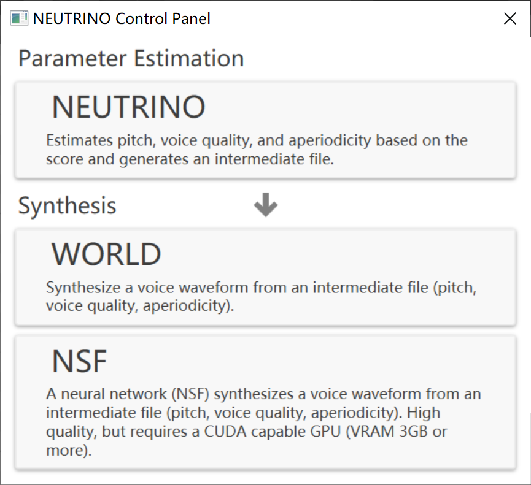
点击 NEUTRINO 选项，在 Model 中选择一位歌手（默认为 MERROW），然后点击 Run NEUTRINO 开始估算。
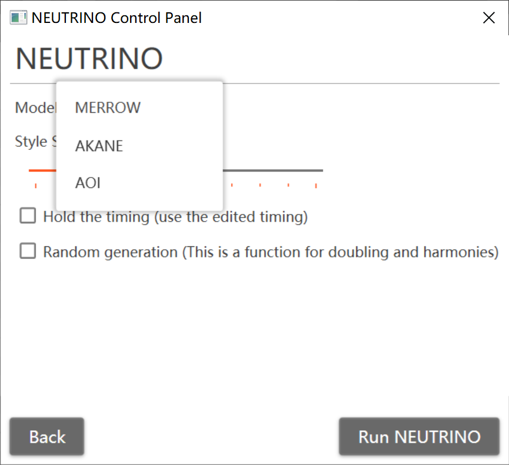
待 Run Process 窗口的进度条显示 Completed 时，点击 Close 关闭窗口，回到调声界面。此时调声工具应在左下角显示 Run WORLD 并自动开始运行 WORLD。等这行字消失后，于第 14 小节附近点击灰色的小节栏，将光标移至乐谱的开头，然后点击屏幕上的播放按钮，或按下空格，播放音频。若听到选择的歌手唱出《Jam》的歌词，说明 NEUTRINO 引擎和调声工具都已配置完成并处于正常运行的状态。
第二部分 填入乐谱
创建一个新的项目。随便起个名。
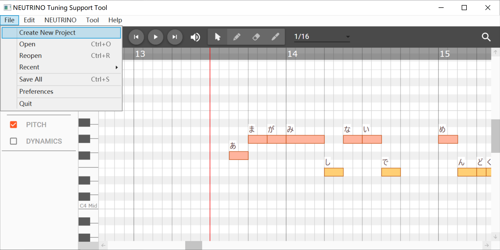
将光标移至开头，在小节栏上右击。右键菜单从上到下依次是曲速、节拍以及调号的添加选项。根据需要修改。调声工具会在光标所在位置插入修改后的设置。
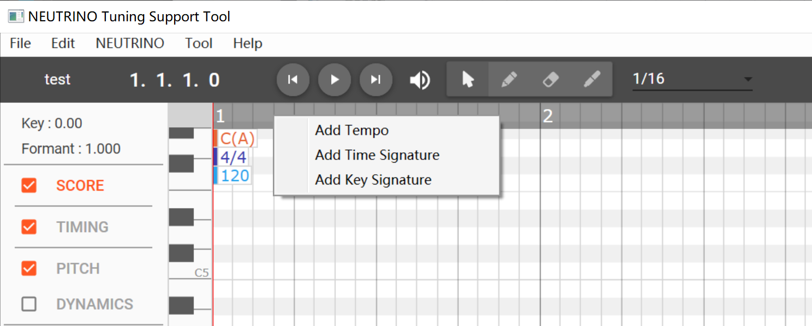
工具栏中有四个工具，从左到右依次为选择工具 (Select)、画笔工具 (Draw)、擦除工具 (Eraser) 与粘合工具（Glue，原意是胶水）。
- 选择工具（快捷键 1）用于选择已有的音符。
- 画笔工具（快捷键 2）用于画新的音符。
- 擦除工具（快捷键 3）用于擦除音符。
- 粘合工具（快捷键 4）用于将点击的音符与它的后一个音符合并为一个音符。
填入音符
切换到画笔，在钢琴窗上点击并拖动，画一些音符。
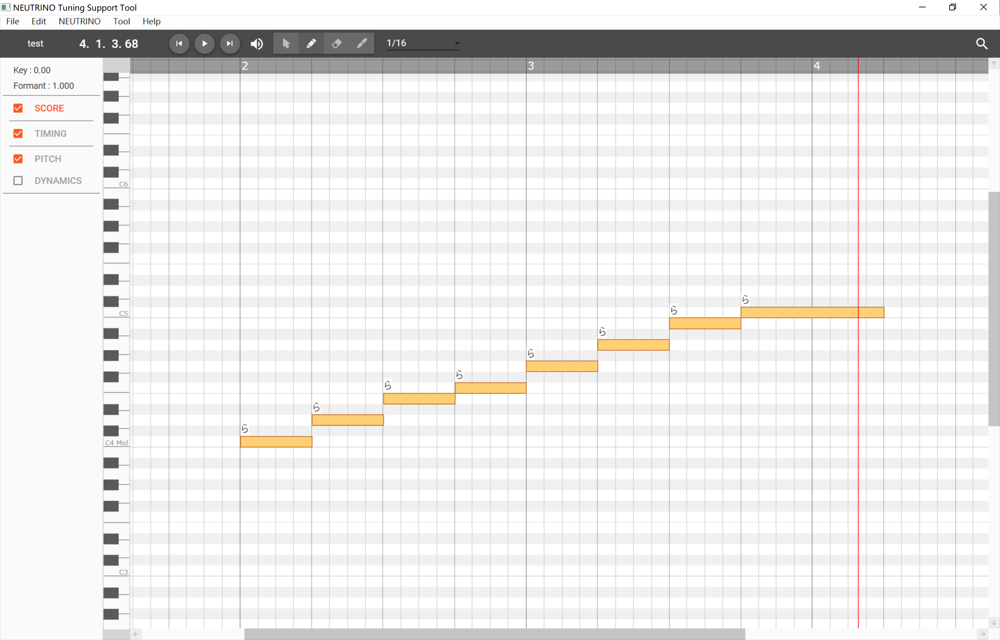
画笔工具移动到音符内时可以通过单击并拖拽的方式移动音符；移动到音符边缘变为 ↔ 的形状时，可以通过单击并左右拖拽的方式调整音符长度。
调出 NEUTRINO 控制面板运行 NEUTRINO，就能听到效果。
音符重叠时，重叠的音符颜色会变浅。
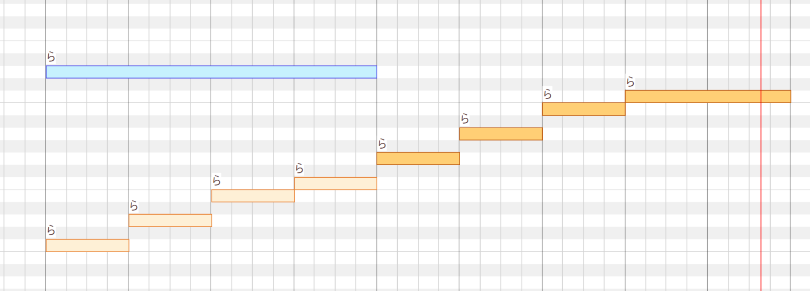
切换到 TIMING、PITCH 或 DYNAMICS 页，勾选旁边的复选框，可以叠加显示参数。
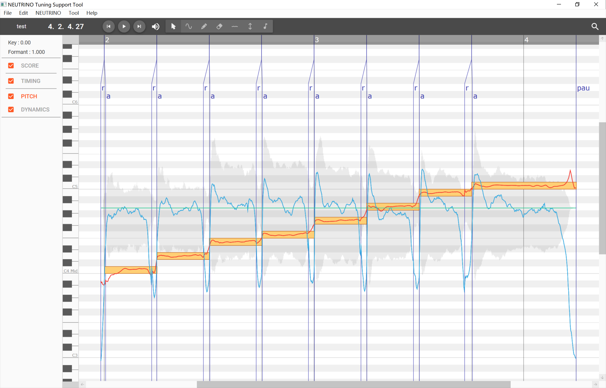
（中间这段时间大概是有人问为什么按照设置走了，但还是听不到 Akane 和 Aoi 的声音，只能听到钢琴声。两个人思考了一下，给出的答案大概是检查一下声库和引擎版本。）
0:46:45 填入歌词
在音符上单击修改单个音符的歌词。
使用选择工具批量选择待填入歌词的音符；或是选择一个音符，然后按住 Shift 键，然后选择另一个音符，来批量选择音符。
在音符上右键，然后选择 Pouring Lyrics（灌入歌词）。这将会从选择的音符开始填入歌词。
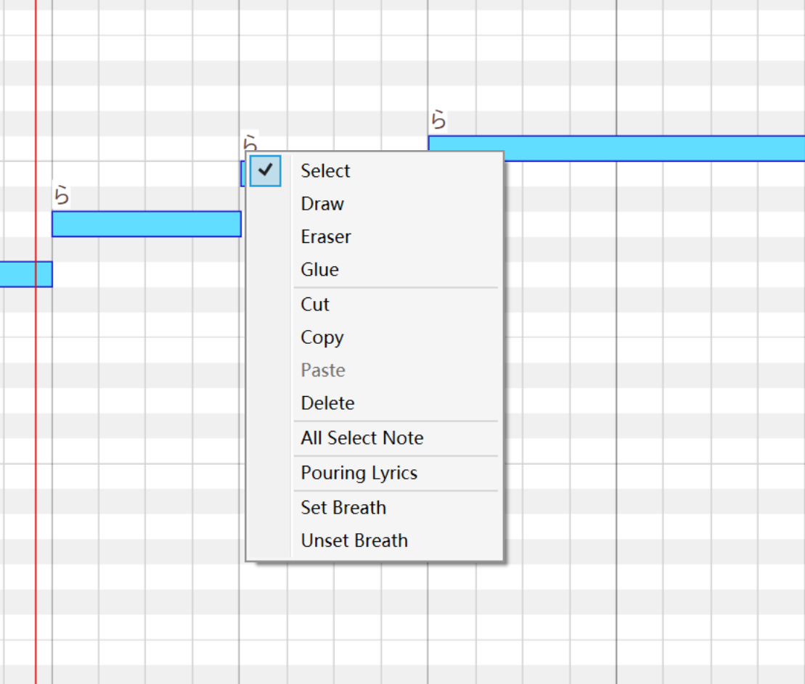
例如，从第一个音符处填入「おねえちゃんかわい」，然后点击确定。
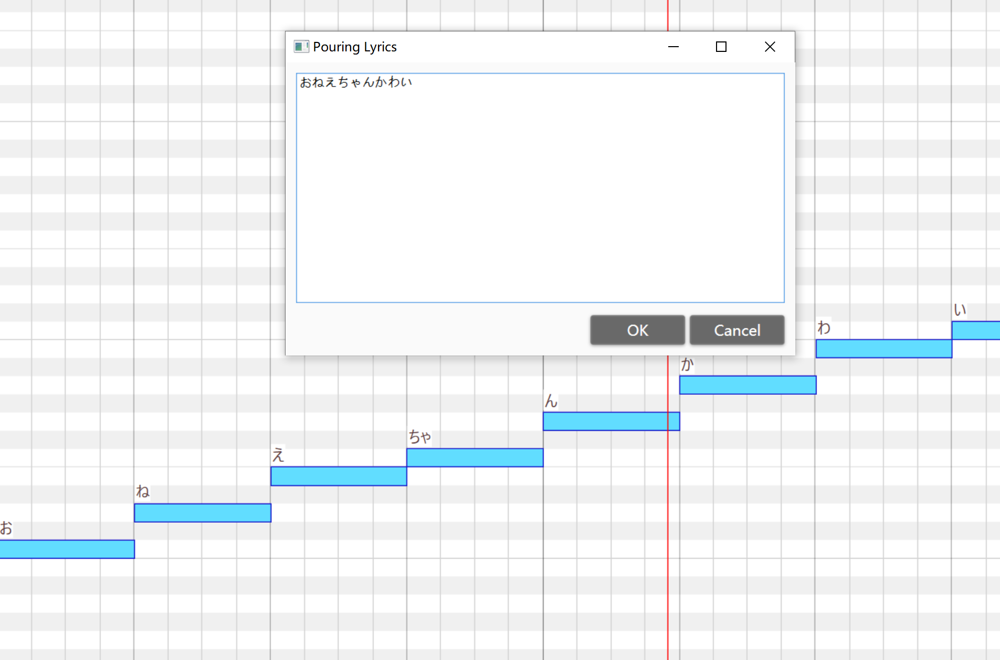
重新生成后应该能听到这样的声音：
通过其他方式获取乐谱
0:49:50 UtaFormatix
又名《科林，我的超人》
网址：UtaFormatix
选择待转换的工程文件，导入到网站中。
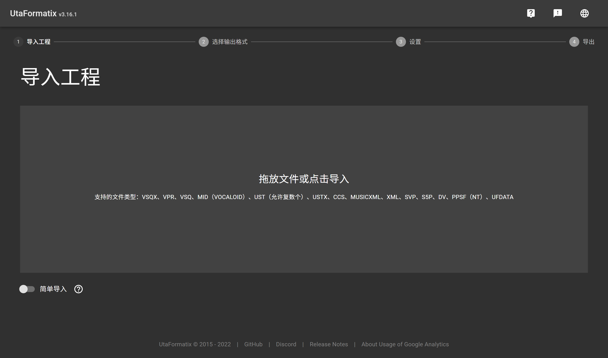
下拉，找到 MusicXml 一项，点击。
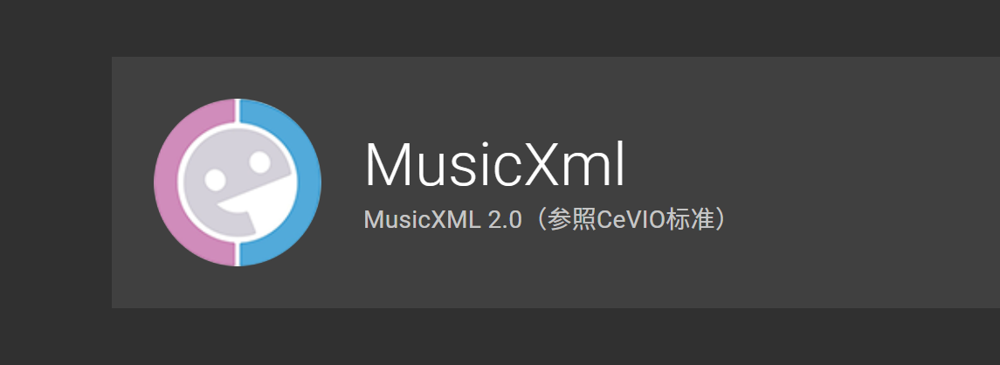
确认设置后点击下一步。
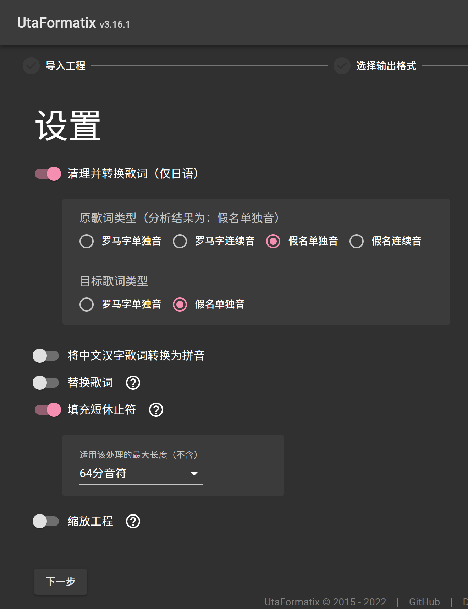
点击导出，下载打包好的 .musicxml 文件。
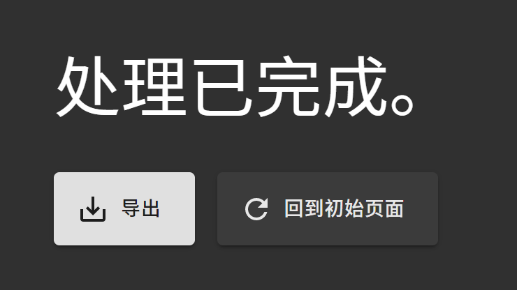
0:50:41 CeVIO
96 州：你看，是鱼卡日桑（笑）
（96 州说出 CeVIO 的一瞬间我笑疯了)
使用「导出MusicXML」一项便可以把当前轨道导出为 .musicxml 文件。
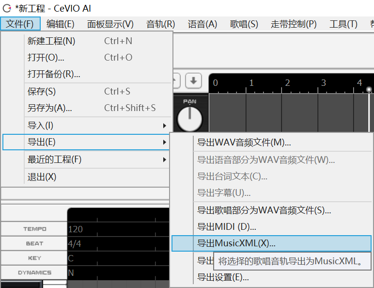
（栗田一直在说缘兔可爱hhh）
CeVIO AI 与 CS 版本均有此功能。
更详细的介绍请参见《MIDI / MusicXML - CeVIO AI 用户指南中文版》。
0:55:29 合成声音
现在虽然在调声工具里生成了供试听的声音，但并未导出音频文件。
调出 NEUTRINO 控制面板，选择 WORLD 或者 NSF 中的一种并点击，就能导出音频文件。导出的文件位于 NEUTRINO\output 文件夹下。使用 NSF 模式导出的音频会带有一个 _nsf 的后缀。
就音色而言，相比 WORLD 而言，NFS 会生成更温柔的声音。有个推荐的导出方式是 Akane 使用 WORLD 模式导出，Aoi 使用 NSF 模式导出。
96 州：茜和葵推荐用 NSF。
栗田：啊，所以还是依声库而不同。
（中间 96 州问了下能不能提其他声库，栗田说可以。）
96 州：再比如，切蒲英的话相对而言用 WORLD 会融合得更好；俊达萌用 NSF 有压倒性的优势。感觉音源不同的话性格也会各显不同。
中场休息：《じゃむ。》
1:08:07 第三部分 学习操作
96 州：选曲固然重要，但在曲子之外也要想象这两个歌姬在场这首歌的时候会带着怎么样的情感。
栗田：也就是在唱某句的时候怎么样演绎会更好一点。
重新打开 TrackA，用 Akane 的 model 运行一遍 NEUTRINO。接下来的第三与第四部分都将让 Akane 来做示范。
SCORE 页的操作
1:12:44 粘合工具
首先第一句，あまがみしないで处的 ない，Akane 唱成了 na i。按日语的唱法来说应该唱成连贯的 nai。观察波形和音高可以注意到，Akane 在这里甚至刻意用了点力。这并不是我们想要的。
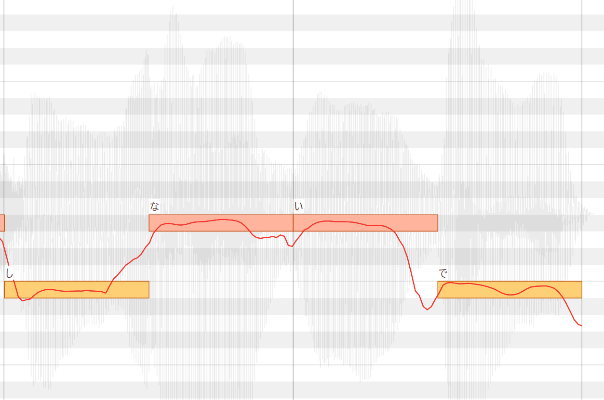
选择粘合工具（快捷键 4），点击 な，将后面的 い 与其合并。连续点击的话，会以点击的音符为首，一直合并后面的音符。
合并后的效果需要重新用 NEUTRINO 生成才能听到。重新生成后的波形和音高就变成了下图所示的样子。断连感消失了。
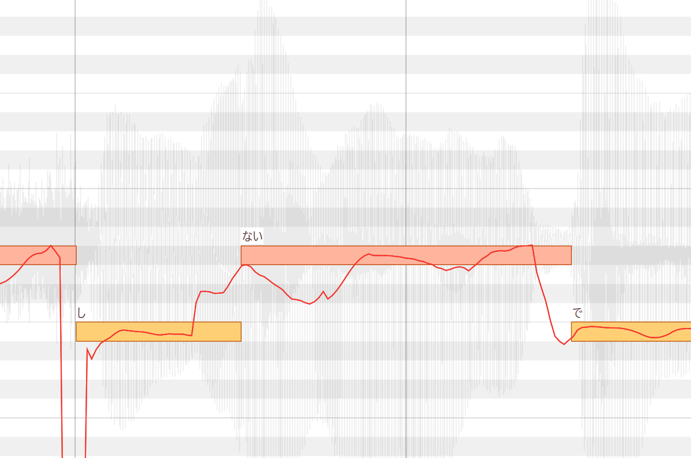
遗憾的是目前调声工具没有分割工具。要把合到一起的音符拆开——比如还是这个 ない——目前只能先缩减原音符的时长，用画笔工具画一个新音符，然后双击原音符，把歌词中的 い 复制到新音符中。可能以后会有吧（
撤销、重做与历史记录
撤销的快捷键为 Ctrl+Z。重做的快捷键为 Ctrl+Shift+Z。在 Menu 中可以查看操作历史记录。
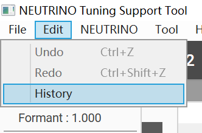
1:22:01 音符的右键菜单：设置与取消换气
在音符上右击可以调出音符的右键菜单。选中一个音符后再右击，可以使用右键菜单的所有功能。
请注意，选中某个音符时，不管在哪里按右键（即使是在别的音符上），调出的右键菜单也只会作用于选中的音符上。【请看96 州 1:22:43 起的错误示范（逃）】
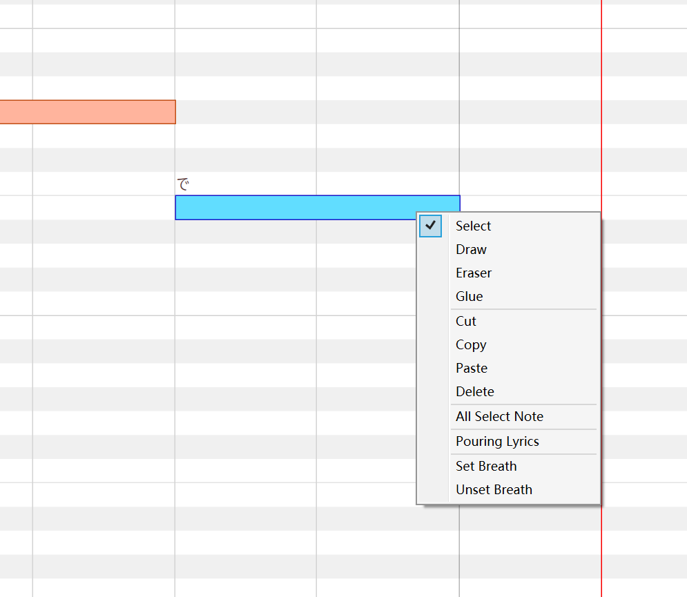
设置换气（Set Breath）与取消换气（Unset Breath）用于手动指定歌手的换气。一般而言，歌手会自动在音符间的间隔之间换气，如果有想让歌手在音符中途换气的地方，就可以用这个功能来强制让歌手换气。
（NEUTRINO 不像 CeVIO 那样自动生成呼吸音，要添加呼吸音的话还是得用 exVOICE 或者百搭音。）
一个用法是将原本断开的音符拉长到与下一个音符相连，然后为其设置换气。与原本断开的停顿相比各有优势，根据需要来选择。
示例：
原本的乐谱：
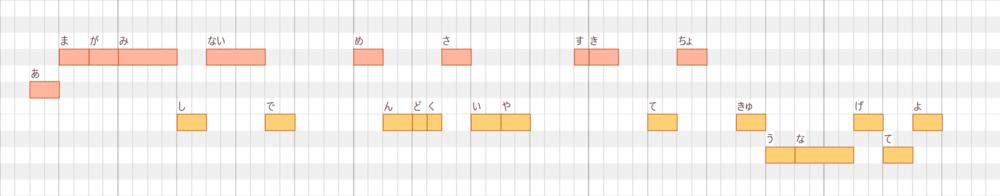
手动指定换气后：
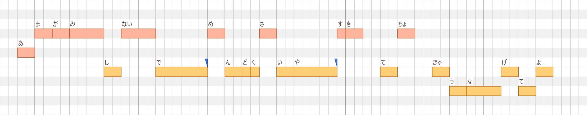
另外，使用粘合工具连接两个音符时，后一个音符的换气也会继承到合并后的音符中。
1:29:04 修改歌词
你可能已经注意到了：一个音符内可以填入多个字符。
另外，灌词 (Pouring Lyrics) 功能强制一个音符对应一个字符。如果填入的字符数量超过了选择的音符的数量，则超出的字符会自动顺延到后面的音符上。
1:32:38 TIMING 页的操作
（正式开始在1:36:00，中间这几分钟两人聊上头了）
栗田：在作曲者的角度要（把 SCORE）调到“好，她唱出来了”之后再开始调整其他内容。
栗田：（调整其他内容的过程）就像是，琴叶姐妹进录音现场录了一段唱歌内容之后，如果（在调整之后）让她们重新唱一遍的话，之前的那个感觉就会消失掉。
96 州：因此，至少在让她们唱过一遍之后再去调整其余部分。
96 州：使用 SCORE 制作曲谱后让她们唱的过程就像是去录音，之后调整 PITCH 之类的过程就相当于是让她们去重唱，因此和调整之前的感觉会不同。
96 州：所以一般来讲是先调整 SCORE 到“好，挺完美的了，只要（对声音）稍加调整就完全能用了”的这种状态之后再去调整 PITCH 之类的内容。
栗田 & 96 州：也就是说，不要把她们当作软件音源，而是要把她们当作就在你身边唱歌的人来对待，把调音当作请她们唱歌一样对待，这种态度很重要。
调声工具左侧的参数排列其实就是推荐的调声步骤：在 TIMING 页调整发声时机→在 PITCH 页调整音高→在 DYNAMICS 页调整音量的动态。
由于修改 TIMING 会影响 NEUTRINO 对 PITCH 与 DYNAMICS 推算的结果，所以优先建议修改 TIMING。如果先前有 CeVIO 的调声经验的话应该对 TIMING 不陌生（可以直接跳过这节）。
NEUTRINO 使用的音素表请从它的 Google Drive 下载。
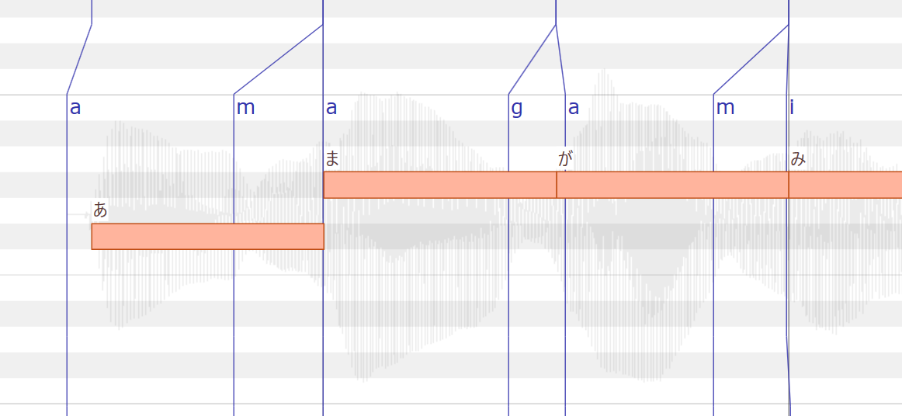
每条蓝线代表一个音素实际发声位置的开始。例如开头的 a 代表着「あ」开始发声的位置；m 和 a 分别代表了「ま」中「m」和「a」开始发声的位置。结合波形可以看得更清楚。
在蓝线上左右拖拽可以调整发音的起始位置。同样，需要调用 NEUTRINO 重新生成才能看到效果。注意到调声助手已经自动勾选了「Hold the timing (use the edited timing) 」【维持时间（使用已编辑的时间）】一项。
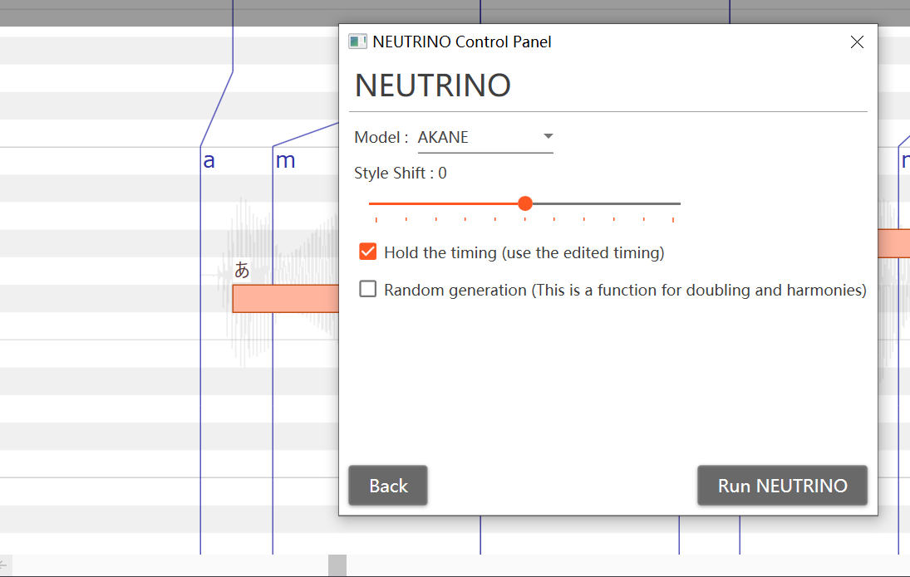
修改后的效果：
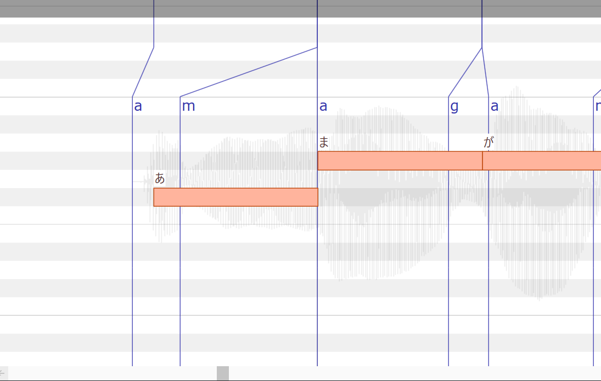
之前讲到的“手动指定换气”里，停顿的时间就可以用 TIMING 细调。
有个规则：想强调哪个音，就把它的辅音（比如「ま」的「m」）稍微往前拉长一点。
另外，比如说，像上图的「が」，它的「a」开始的位置并不是严格踩在音符「が」开始的位置，而是稍微往后一点。在日本那边有个词叫「後ノリ」，用来形容这种稍稍滞后于节奏的情况。与之相对应的词叫「前ノリ」，就是稍微前一点的情况。
TIMING 的调声风格因人而异。请根据你的喜好调整 TIMING。
1:45:15 PITCH 页的操作
96 州：这是最有意思的地方。真的，是最有意思的地方。
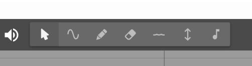
PITCH 包含了许多工具，从左到右依次为：
- 选择工具 (Select)：在这个窗口里没啥用（
- 颤音工具 (Vibrato)：为选择范围内的音高添加颤音。允许做更进一步的设置。
- 画笔工具 (Draw)：绘制音高。
- 擦除工具 (Eraser)：擦除选择范围内对音高的修改，将其复原回 NEUTRINO 默认的参数。
- 平滑工具 (Smooth)：使选择范围内的音高变为平滑的曲线。
- 升降工具 (UpDown)：上下移动选择范围内的音高。注意，选择范围边缘处音高的移动不是平行移动。
- 机械音工具 (Kerokero)：使选择范围内的音高直上直下连接，形如正弦方波。
对音高的修改无需使用 NEUTRINO 重新生成，直接按播放键就能听到效果。
颤音工具可以细调选择范围内的颤音深度 (Depth) 与频率 (Frequence) 。调整后，按 Enter 就能直接将颤音应用到音高上；或者按 Esc 放弃更改。
这个工具另带一个参数设置。点击工具栏旁边的齿轮，就能调节振幅 (Amplitude) 与频率 (Frequence) 的极值，以及频率的初始值。
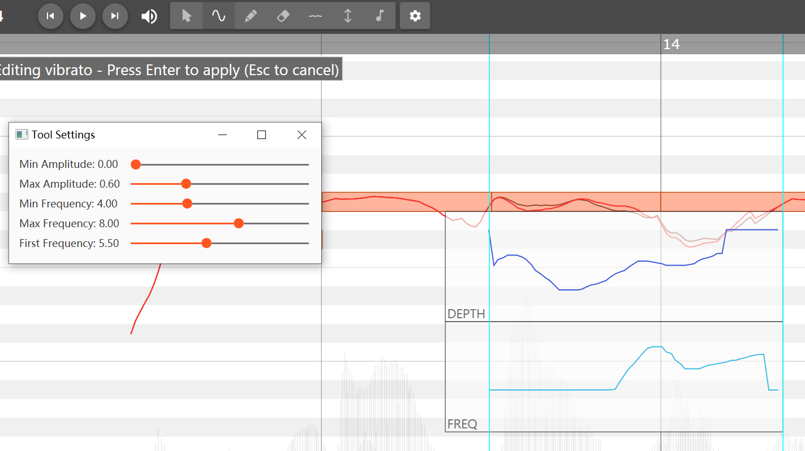
画笔工具可以直接在钢琴窗上绘制音高。原始音高会以褐色显示。
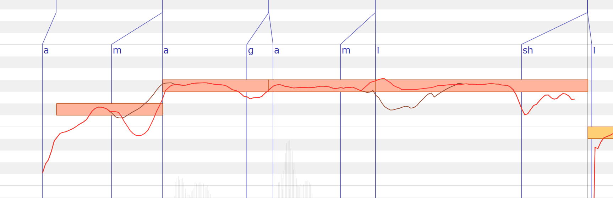
平滑工具可以将音高线变得更为平滑。鼠标向下拖动为平滑，拽得越下平滑度越高；向上拖动为回复原本的曲线。
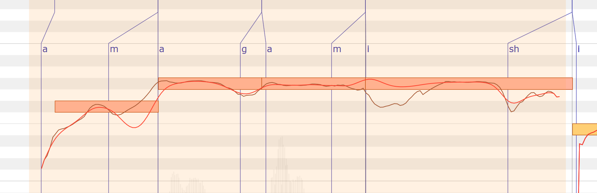
升降工具可以上下移动音高。选择范围内的音高大部分为平行移动，但在选择范围的边缘处，音高会自动与范围外的音高连接。
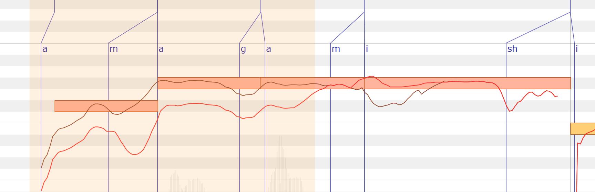
机械音工具可以将音高的连接方式变成直上直下的连接。这种音高线发出的声音会如同机器人般机械。名字来源于青蛙叫声的 SFX。
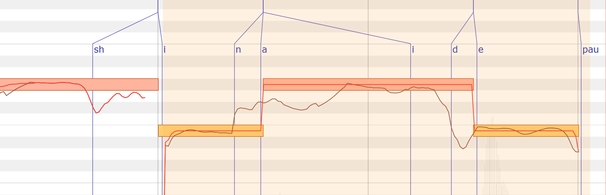
如果在机械音工具后接着再使用平滑工具，能得到非常平滑的音高曲线。再配合颤音工具，就能画出非常漂亮的音高转换。
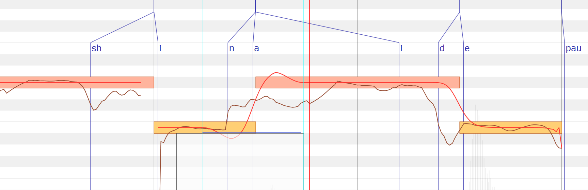
2:05:20 DYNAMICS 页的操作
这里可以调整音量。实际的音量显示为浅蓝色；原本的音量显示为深蓝色。
（过于简单甚至两句话就带过去了）
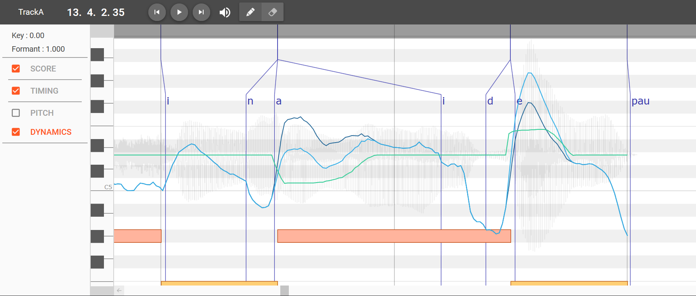
第四部分 调声
2:28:13 NEUTRINO 的特点
96 州：在 NEUTRINO上，长音的表现更加出色。音符越长，音符的数量越少，唱句表现得就更好（note が長く少ないほうが上手に構成してくれる）。
2:37:40 调整 PITCH
96 州：Akane 从各方面来说，会比 Aoi 更容易产生断连的感觉（原文シャクリー，是指抽泣或打嗝。但根据他的操作——他当时在画音高——和这句话的背景，感觉更像是音符之间唱得断断续续的意思）
2:13:09 修改乐谱的填词，调整有违和感的地方
音高不同的音符合并后，别忘了回 PITCH 页面重新画一下音高线。
2:13:19 めんどうくさいや的调整
Akane 这里唱着像 mendoukusa iya，有停顿感。96 州打算把这个 sa iya 处理一下，变成更平滑的 saiya。
处理方法是把 さ い 合成一个音符。但这样会带来音高的改变：い 原本的音高是 E4，跟 さ 一合并，就都变成 G#4 了，跟原来的音高不一样了，后面要去 PITCH 窗口画音高线把音高修正回来。
元音无声化（清化）
2:17:39 其他行的无声化处理
不止 sa 行，其他行也能做无声化处理。
一个稍稍特殊的用法是 たい，Akane 经常会出现发 ta i 而不是 tai 的情况（栗田：就像一个个字蹦出来的那种感觉）。把 たい 换成たゆ，然后用 ’ 将元音无声化变成 たゆ’（tay）。たゆ’ 的话，听起来就像是省略的 tay，就出来 tai 的感觉了。替换成 ya/yo 同理。
栗田：前面的あまがみしないで的ない也可以换成 nay，对吗
96 州：对的
2:20:22 きゅう的调整
Akane 在这里的发音很违和。为了更平滑，把 きゅ 和 う 合并后，直接删掉 う，只留 きゅ 的音。
毕竟 Akane 在唱きゅう的时候会唱成 kyu u，所以这时候就不需要う来体现长音了；取而代之的是拉长きゅ，用拉长音符的方式体现きゅう的长音效果。
“きゅう是长音但是 Akane 发不好，所以干脆改成短音然后用拉长音符的方式让她发长一点”
——译者语
2:20:56 ちょ与きゅ间的调整
把 ちょ 拉长后后面加一个 っ。因为 ちょ 和 きゅ 中间有音符的空白部分，于是就拉长音符填补空白增加流畅度，但是ちょ不是长音所以加了促音符号补上停顿。
2:22:04 つ的调整
这段没什么大问题。但如果其他地方的つ发音有问题的话，可以选择把 つ 的元音无声化。这里 96 州建议可以试试与前面的 に 接起来变成 につ’，可能会更加顺滑（他自己没试过）。
在其他地方的话与后面的 め 接起来填成 つ’め 也是可以的。但这里如果让他本人来说哪个更好点儿的话，他更倾向于与前面的 に 接起来，因为这里的 め 正好处在音符的开始位置，填成 つ’め 的话感觉就不对了。音符的切入时机也是很重要的。1
2:24:33 えんどれす (endless) 的调整
え 和 ん 合并。因为是日文歌，所以留着日式英语的发音。ど 不做处理也行。要让发音更像英文的话,就用 えんど’れす’ 。
这里调完后还得去 TIMING 页里细调发音时机。
2:27:09 さいのはあて的调整
さ 和 い 合并。は 和 あ 合并后删掉 あ。
跟前面さい与きゅう的处理思路差不多。
2:27:30 こんな的调整
直接删掉 ん。这里听着太长了，把 ん 删去，拉长 こ，能够构成更不错的听感。而且因为な里已经有个 n 了，这种なにぬねの前还有ん的情况有时听着会有种音太多的感觉，这时把ん删了也是一种调声方法。2
2:29:33 crazy nonsense music 的调整
删掉く原先的音符，与れい合到一起；な和せ分别与后面的ん合并。す可以选择留着原本的音（因为是日语歌所以留点日语发音也无所谓）music 的 /zɪk/ 通过じく’来实现。
く’れい じ なん せん す みゅ じく’
2:30:44
栗田：怎么看你（操作）有种抽卡的感觉
96 州：是抽卡呢，因为现在这样（操作）虽然是在往正确的路上走，但是究竟正不正确还得等最后渲染合成之后才能知道。
（是抽卡呢（抽卡呢
2:31:05 が的调整
通常来说，想唱得平滑的话，应该把が拉长后后面加一个っ。但 96 州这里选择放置不动，因为他想突出后边的い长音（Onega-i-)，而不是像平常说话的语调（Onegai）。这是音乐中的表现了，看个人选择。
2:32:08 ける的调整
两个合并然后删掉る的元音。这里是る的无声化。
2:33:09 调整 TIMING，从更细节的地方调整发音
这里基本就看个人喜好，没有什么音乐上的解说了。
2:37:40 调整 PITCH
96 州只是做了个很快速的示例（真调起来那这直播就要拖到 4h 了）
日语听译与协力
- 第四部分：天才美少女夏木爱琳
- 其他：RichadoWonosas、天堂麻弥